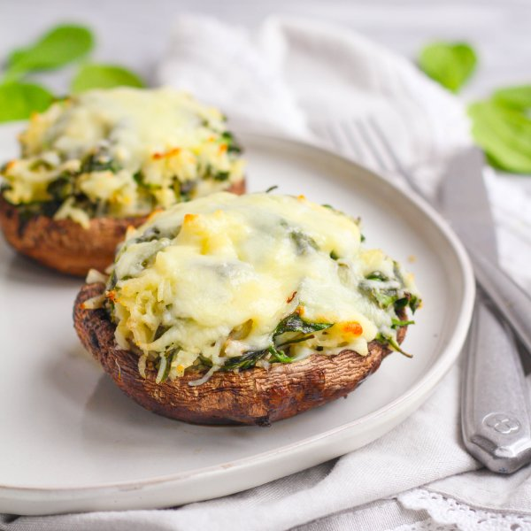

Cheesy Spinach & Rice Stuffed Portobello Mushrooms

Total Time
40 min
Nutrition (Per Serving)
620.6 kcalCalories
38.4 gProtein
53.3 gCarbs
29.5 gFat
Full nutrition table
| Calories | 620.6 kcal |
| Total fat | 29.5 g |
| Saturated fat | 11.8 g |
| Trans fat | 0.4 g |
| Cholesterol | 53.3 mg |
| Sodium | 378.8 mg |
| Carbohydrates | 53.3 g |
| Fiber | 4.5 g |
| Sugars | 8 g |
| Protein | 38.4 g |
| Potassium | 1350.2 mg |
| Calcium | 380.8 mg |
| Iron | 5.3 mg |
| Vitamin A | 487.9 IU |
| Vitamin C | 20.9 mg |
| Vitamin D | 28.2 IU |
Cookware
Ingredients
- 2 (5 oz) pkgsbaby spinach
- 1 cupbasmati rice
- 16 fl ozchicken or vegetable broth
- 4 clovesgarlic
- ⅔ (8 oz) blockmozzarella cheese
- 4 ozParmesan cheese
- 1 ⅓ cupsplain Greek yogurt
- 8 capsportobello mushrooms
- black pepper
- extra virgin olive oil
- salt
Steps
- Preheat oven to 375°F.
- Using a strainer or colander, rinse rice under cold, running water, then drain and transfer to a medium saucepan. Add broth and bring the mixture to a boil over high heat.1 cup basmati rice
16 fl oz (2 cups) chicken or vegetable broth - Once liquid comes to a boil, stir the mixture, cover the saucepan, and reduce the heat to low. Cook rice until the liquid is fully absorbed, 15-18 minutes.
- Meanwhile, wash and dry mushrooms; remove stems and carefully scrape out gills, making sure not to damage the rim of the mushrooms. Place on a baking sheet and rub with oil; set aside.8 caps portobello mushrooms
4 tsp extra virgin olive oil - Peel and mince garlic.4 cloves garlic
- Preheat a large skillet over medium heat.
- Once the skillet is hot, add oil and swirl to coat the bottom.2 tbsp extra virgin olive oil
- Add garlic to the skillet and cook until fragrant, 15-30 seconds.
- Wash and dry the spinach. (Skip if it came pre-washed.) Add to the skillet in handfuls, waiting for the spinach to wilt slightly before adding the next handful.2 (5 oz) pkgs baby spinach
- Finely grate Parmesan.4 oz Parmesan cheese
- Add Parmesan, yogurt, salt, and pepper to the skillet and stir to combine; remove from the heat. When the rice is done, add to skillet and stir to combine.1 ⅓ cups plain Greek yogurt
½ tsp salt
¼ tsp black pepper - Fill mushroom caps with equal portions of the rice mixture. Place in the oven and bake for 12 minutes.
- Meanwhile, grate mozzarella.⅔ (8 oz) block mozzarella cheese
- Remove baking sheet from oven and top mushrooms with mozzarella. Bake for another 5 minutes, until cheese is golden and melted.
- To serve, divide mushrooms between plates. Enjoy!